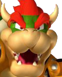

Bowser
Bowser has been thwarted by Mario on too many occasions to count. It has been enough times that he is probably in need of therapy. Yet, you have to admire his determination as he continually pursues his goals. No one knows what his goals are or why he waits so long after capturing Peach to do something, but one day he may actually accomplish whatever it is he is trying to do.